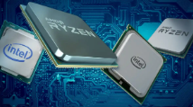

Components
Proccessor(CPU's)
Proccesor Concepts
When selecting a central processing unit (CPU), you must match the motherboard and the CPU. Either select a CPU supported by the motherboard or select a motherboard that supports the processor you have chosen. The following table lists considerations for choosing a processor.
CPU manufacturer
Intel and AMD are the two major producers of processors used in modern PCs.
- Both Intel and AMD processors work in PC systems and support Windows software.
- Intel has a larger market share; AMD processors generally cost less.
- Processor performance and features vary between models and manufacturers.
Process size
The process size refers to the manufacturing process used to etch transistors onto the silicon wafer that will become the CPU. A smaller process size means smaller transistors, which translates into a smaller CPU die with more transistors and less power consumption. Process size is expressed in microns (such as .25 microns) or nanometers (90 nm equals .09 microns).
Hyper-threading
Hyper-threading is a feature of some Intel processors. It allows a single processor to run threads (instructions) in parallel, as opposed to processing threads linearly. Hyper-threading enables a processor to execute two threads at the same time. For example, on a quad-core Intel system that supports hyper-threading, the processor can execute 8 threads at a time (2 on each core).
Hyper-threading is not the same as multithreading. Multithreading is a feature of an application that allows it to send multiple threads at the same time. Applications are typically written to support multithreading to take advantage of multiple cores (executing threads on two or more processors at the same time) or hyper-threading features.
Integrated memory controller
To improve performance, some processors include the memory controller with an integrated graphics processing unit (GPU) on the processor die. This results in faster memory access by the processor.
Cooling
Processors require a form of heat dissipation system to function properly. Without a heat dissipation system, a processor will overheat and burn out in less than a minute. CPUs use a heat sink, fan, thermal paste, liquid, or fanless cooling system to transfer heat from the CPU to the cooling unit.
Processor Troubleshooting
Symptoms of a failed or failing CPU include:
- System will not boot.
- System boots, but the operating system fails to load.
- System has power-on self-test (POST) parity problems with a number of devices.
- System locks up shortly after startup.
- This symptom is a possibly thermal issue.
- You can check for a thermal issue by shutting down the system, letting the system cool off, and restarting the computer.
- If the problem repeats:
- Check the heat sink and fan for placement and condition.
- Verify that thermal paste or a thermal pad has been used between the processor and the heat sink.
- Ensure the heat sink is firmly attached to the CPU.
- Verify that the CPU is properly seated in its socket.
- Make sure the system case fans are working and that the case and expansion slots are in place.
- If the computer has this symptom but is not overheating, the problem could be an incorrectly set clock or system timers in the BIOS/UEFI.
- System sounds a POST beep code indicating a CPU fault upon boot.
- You should verify that the CPU is receiving sufficient power by checking the power outputs.
- If these are good, replace the CPU.
- If the fault remains, the problem is with the motherboard.
- System crashes on startup or when running a software application or a certain group of applications.
- You should run repetitive tests using diagnostic software.
- If the symptoms remain after replacing a seemingly faulty CPU, run similar tests on the motherboard and chipset.
- You should also check for a corrupt file in the software.